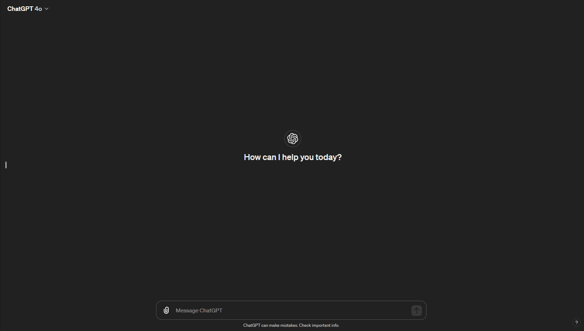

Have you ever thought about how humans should interact with technology and what the best methods are for doing so? Also, how those technologies can be improved through the use of artificial intelligence. Well, then you're on your way to learn about Human-Computer Interaction (HCI) and the more specific domain of Human-Centered AI (HCAI).
What is HCI + AI?
Human-computer interaction (HCI) is a multidisciplinary field of study that focuses on the design of computer technology, particularly the interaction between humans (users) and computers. When incorporating Artificial Intelligence into the mix, you enter the domain of Human-Centered AI (HCAI), which involves the study of designing, developing, evaluating, and deploying AI-driven technologies to augment and empower human capabilities, leading to interactive systems that combine artificial intelligence with human users. This interdisciplinary field combines principles from computer science, behavioral sciences, and design to create intelligent, user-friendly, and trustworthy AI systems that augment human capabilities, support decision-making, and improve user experiences.
Why is HCI + AI so Important?
Machine learning and artificial intelligence are most effective when combined with human-computer interaction. While these technologies can handle large amounts of data and make predictions, they are most valuable when designed to work smoothly with people. Human-computer interaction helps make these systems clear, reliable, and responsive, so users can interact with them easily through language, gestures, or flexible interfaces. This approach not only makes technology easier to use but also helps people make better decisions by showing information in a way that fits the situation. As AI becomes more common in areas like healthcare, education, and creative work, using HCI principles helps keep these systems ethical, inclusive, and focused on human needs. This leads to technology that is more useful, empowering, and widely accepted.
Example: How Using Chat GPT In Code VS AS A Human.
An example that most can probably relate to is how we interact with ChatGPT. As humans, it is more intuitive for us to interact with this LLM through a chat box, where responses are displayed, as shown in the image below.
This interface would be considered part of the HCI aspect of the AI. Alternatively, one can interact with ChatGPT through code, as shown in the Python code below. This is far less intuitive and does not take human interaction into consideration when using this LLM.
# 1. Install the official OpenAI package:
# pip install openai
from openai import OpenAI
# 2. Create a client with your API key
# (make sure to set the environment variable OPENAI_API_KEY first)
client = OpenAI()
# 3. Send a chat completion request
response = client.chat.completions.create(
model="gpt-4o-mini", # You can use gpt-4, gpt-4o, or gpt-3.5-turbo
messages=[
{"role": "system", "content": "You are a helpful assistant."},
{"role": "user", "content": "Write a short poem about AI and humans working together."}
]
)
# 4. Print the model's reply
print("ChatGPT says:")
print(response.choices[0].message.content)
Research & Application Domains
- Intelligent Interfaces
- Adaptive UIs based on context, expertise, or preferences
- Personalized dashboards, recommenders, multimodal UIs
- Natural Language & Conversational Systems
- Chatbots, voice assistants, multimodal dialogue
- Human–AI collaboration via intent recognition
- Multimodal Interaction
- Vision, speech, text, haptics, AR/VR inputs
- VLMs/LMMs for context-aware interactions
- Affective Computing & Emotion-Aware AI
- Sensing affect (face, voice, physiology)
- Emotion-driven adaptation of feedback or difficulty
- Human-AI Collaboration & Co-Creation
- AI partners in design, art, writing, coding
- Shared decision-making tools for teams
- Responsible & Explainable AI
- Interfaces for transparency and interpretability
- User trust, consent, and control mechanisms
- Accessibility & Inclusive Design
- AI-driven assistive tech (STT, readers, gestures)
- Adaptive systems for diverse abilities
- XR/AR/VR & Intelligent Environments
- AR/VR with AI perception and tracking
- Smart spaces and IoT with context-aware agents
- Learning & Educational Technologies
- Intelligent tutoring and adaptive learning
- AI-powered assessment and support
- Ethics, Trust, and Human Factors
- Perception, acceptance, and reliance on AI
- Bias reduction, fairness, value-aligned design
- Robotics & Embodied Interaction
- Human-robot interaction (social, service, industrial)
- Multimodal communication with embodied agents
- Healthcare & Wellbeing
- Patient engagement and digital therapeutics
- Clinician-facing decision support with oversight